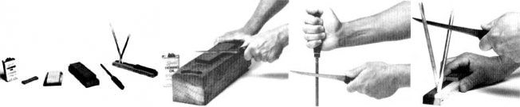

STAFF PHOTOS
[1] An array of sharpening equipment. Left to right: honing oil, a small Carborundum stone, an Arkansas stone in its cedar box, a Japanese waterstone with plastic platform, a butcher's steel, and a touch-up set including a small Arkansas stone and twin ceramic honing sticks. [2] An efficient honing technique is to stroke forward in an arcing motion, as if trying to shave a thin slice from the top of the stone. [3] Remove honing burrs by pulling the blade across a butcher's steel or [4] a ceramic stick.